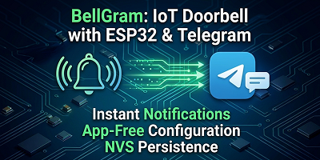
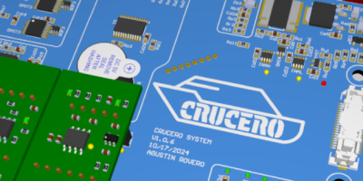
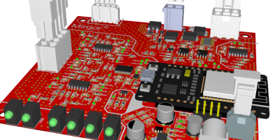
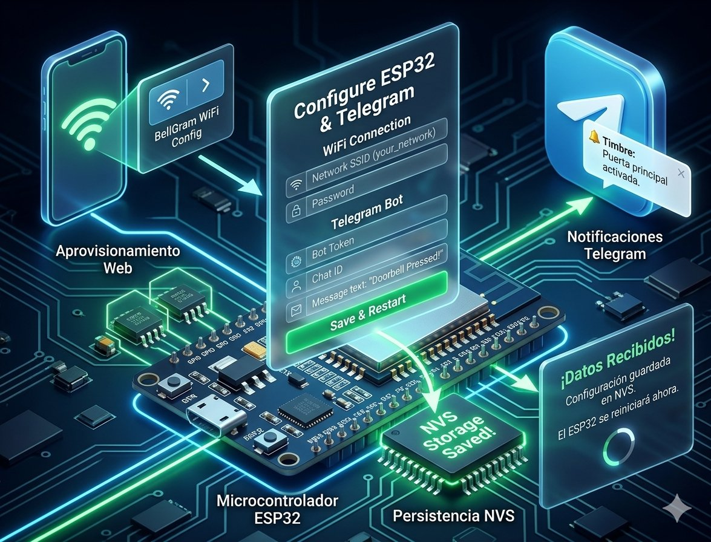

Continue reading

Continue reading

Continue reading

Rear Content

Rear Content
I am a passionate Systems Engineer with a deep interest in technology, process optimization, and complex problem-solving. My core expertise lies at the intersection of hardware, firmware, and software, specifically in the development and validation of embedded systems.
Throughout my career, I have cultivated a strong professional philosophy: I don't just build systems; I create the tools that empower teams to test, refine, and deploy them with confidence. Driven by an insatiable curiosity, I thrive in environments that challenge me to connect low-level electronics with high-level automation platforms.
Technical Journey & Expertise
With over 10 years of hands-on experience in product development and technical leadership, I have successfully driven projects from initial architectural design to mass deployment. Some of my most impactful contributions include:
- IoT & Smart Metering: I spearheaded the development of advanced firmware for smart meters utilizing ESP32 platforms. I engineered custom solutions for reliable data acquisition, low-power optimization, and secure cloud connectivity.
- Automotive QA Automation: To bridge the gap in complex test environments, I designed and built custom CAN bus automotive simulators. These tools effectively automated quality assurance pipelines, drastically reducing testing bottlenecks and human error.
- Industrial Control Systems: I have designed deterministic, low-level process controllers utilizing FPGAs, ensuring high-speed execution and precision control for critical industrial operations.